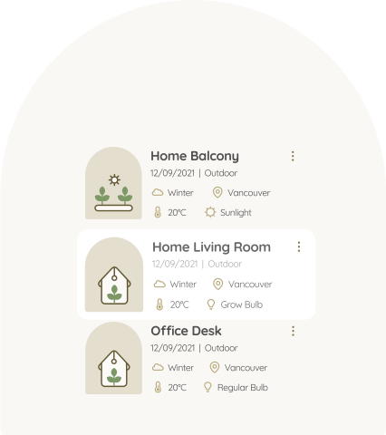
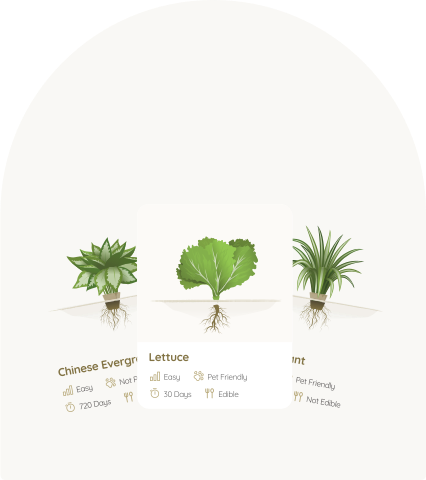
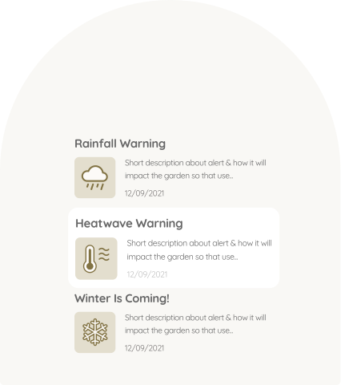

Project Overview
The project is in the agriculture industry. We will be solving the problem of users who are new to gardening not knowing what plants they can grow at home. We will be solving this problem by creating a mobile app to provide users with suggestions on plants they can grow at home based on location, season & light exposure.
Via our Android Native Application, users can get top 10 plant suggestions suitable to their inputted information about the environment, whether looking for plants to grow indoor or outdoor. These suggestions can be filtered upon users preference, to view pet-friendly/non-pet-friendly and edible/non-edible options.
Solution
Save Environment
Users will be able to save their location’s environment information in the app to view suitable plants of the environment in the future.
Plant Suggestion
Providing suggestions on what plants users can grow at home based on location, season, and light exposure.
Weather Notification
Users will get notifications about seasonal changes and weather hazards.
The supporting features

Save Environment
This feature will be used to save user’s location environment information in the app. This makes it more convenient for users to keep track of the plants that they can grow. This will also reduce the number of times users need to input their environment information into the app to get plant suggestions in the future.
Users can save the environment information on the plant suggestion screen after inputting the environment information needed for the app to provide plant suggestions. The saved environment will be stored and displayed on the “Saved” page. Users can always rename or delete the saved environment.

Plant Suggestion
The feature provides users suggestions on what plants users can grow at home based on the users’ location, season, and light exposure. This solves the problem of users who want to start gardening at home but do not know what plants they can grow.
Users will provide their location, light source, and the app will provide the top 10 suggestions on what the user can grow at home. This feature will be utilizing the magnetometer (to determine users’ light source orientation), geolocation (to determine the climate based on users’ location), and the date/time functionality (to determine the current season) of the mobile device.

Weather Notification
This feature will be used to save user’s location environment information in the app. This makes it more convenient for users to keep track of the plants that they can grow. This will also reduce the number of times users need to input their environment information into the app to get plant suggestions in the future.
Users can save the environment information on the plant suggestion screen after inputting the environment information needed for the app to provide plant suggestions. The saved environment will be stored and displayed on the “Saved” page. Users can always rename or delete the saved environment.
Market Research

Residential
Commercial
Industrial
According to a Grand View Research lawn and gardening consumables market analysis report (https://bit.ly/3DjDNnG), the global lawn and gardening consumables market was valued at USD 19.50 billion in 2019 and is expected to grow to USD 25.94 billion by 2027. Among all the demographics, the residential segment accounts for the largest share of the market of more than 45% in 2019 and is expected to grow at the highest rate.
A common problem with people new to gardening is that they do not know what they can grow at home. That’s when our app can come in handy to solve the problem of the growing number of new residential gardeners. Our app will be recommending to the new residential gardeners what plants they can grow at home.
Competitive Analysis

Design Schedule

We developed our Design concept from emphasizing on problem to Project Launch within 12 weeks. To specify context of use, our team conducted extensive market research and competitive analysis to plan, define scope, and lockdown features.
During ideation, and within the span of 4 weeks, we collaborated on design and iterations of wireframes and visual assets on platforms such as Figma and Creative Cloud. Development of each iteration was built on bi-weekly sprints, which helped us manage tasks and maintain design integrity.
My role as Design Lead consisted of planning for the design schedule and getting approval from the Project manager to ensure deliverable deadlines meets the project development pace. To keep track of the progress of Designers, I broke down deliverables into work packages, and assigned tasks to design team members based on their interests and area of expertise.
Development Schedule

During the first sprint, the Development team planned on the features and conducted research. During weeks 3-4 the development environment was set up and the development process began during weeks 5-7.
By week 8 of Development schedule, we got started on the Alpha build testing and refining bugs accordingly. Code freeze process took place during week 11, which helped us prepare for the presentation preparation, platform demo and rehearsal that took place during week 12.
System Architecture
Our mobile app front-end (including React, Facebook and Google Authentication) and back-end (including NodeJS and ExpressJS) repositories are posted on Github. We are using MongoDB for database and Amazon S3 for image storage. We are hosting our front-end on Expo and back-end on AWS EC2. We chose this tech stack because it is widely used in the industry.

Cloud Feature
Through the cloud, we will be storing and retrieving user information to keep track of the user’s saved environments. We will be using plant information to filter and suggest recommendations that users can grow at their place. We will also be using city information to get outdoor conditions and filter plants accordingly to get suggestions for outdoor growing.
We are using MongoDB as a NoSQL Database that provides us scalability in the future when our user base grows along with plants and city data. We are using Amazon S3 for image storage on the cloud for fast and easy access.
Platfrom
Both Android and iOS are very popular these days. Consequently, we decided to build the mobile application on a hybrid platform. The app will be developed in React Native because later on, we can modify the code to work on both platforms. The developer team is familiar with React components and we wanted to make use of this skill to develop a mobile application with a great user experience.
Our marketing website used promote the Plantor mobile app and encourage users to download the app is a static website without any of the mobile app plant suggestion functionalities.
Database Structure

City Database

User Database

Plant Database
We have 3 endpoints for data sets for the users, plants, and cities. User dataset will have basic user information, saved articles and saved environments for that user. Plants dataset will have all the plant information that our algorithm requires to filter through and suggest plants to users that they can grow. Cities dataset will have the cities information for the algorithm to apply filters for outdoor plant suggestions.
Design Technology

We used Asana to keep track of tasks, Figma to collaborate on UI and UX design tasks (information architecture, user flow, wireframes, mockups), Adobe Illustrator and Photoshop to create UI assets, Adobe Indesign to draft the project proposal, and Adobe After Effects to create GIF animations.
Business Strategy

Monetization
With future features implemented, we will be monetizing the platform by collecting a 10% transaction fee at the time of each purchase at the expense of the vendor. We will also be monetizing through user subscriptions to access the full functionalities of the mobile app.

Business Model
With future features implemented, our business model will be focusing on C2C (peer to peer gardening support) and B2C (businesses selling seeds and gardening products).
Marketing Strategy

Referral Program
With future features implemented, our referral program entitles the referee and referrer 3 months of free access to our premium subscription and free in-app credits for the referee and referrer to get gardening support or buy seeds and gardening products.

Affiliate Partner Program
Our affiliate program entitles partners to 0.2% of each transaction tracked and executed via their channels.
Future RoadMap

User Experience
The concept of the project, due to the limited timeline (10 weeks), only focus on the client-side, where the user inputs location and gets access to a variety of listings. The Host-side and how they can create a listing are set for the future roadmap. We anticipated allowing regular users to convert and upgrade their User profile to Host via a button. By providing more detailed information about themselves, property and workspace, they can start creating listings.
The following steps we took during the defining phase of the project to learn more about our prospect user's pain points, needs and how they can use navigation through our platform to accomplish their desired goal. The flowing documentation is a collaborative effort divided equally between the team of 3 designers. As the Lead Designer, I was responsible for guiding towards cohesiveness of the project, branding and meeting deadlines efficiently. All the design team members participate in the early stages of defining the concept.
UX Blueprint
To define the concept, feature lockdown and plan for the steps required to create the features.
User Persona
To create an imaginary profile for our prospect users, taking their pain points, needs and goals into consideration.
Information Architecture
To distinguish the data and dedicate sections and subsections to them in the most intuitive format to create higher engagement within the platform.
Userflow
Contains detailed information about the user navigation through this web app from login process to the final steps after contacting the host.
UX Blueprint

User Persona


Information Architecture

User Task Flow

Prototyping Feature UX


The pet friendly plant suggestion option page wireframe is shown on the left. The plant information detail page wireframe is shown on the right
Project Release December 2021

Project Release December 2021
Team Members